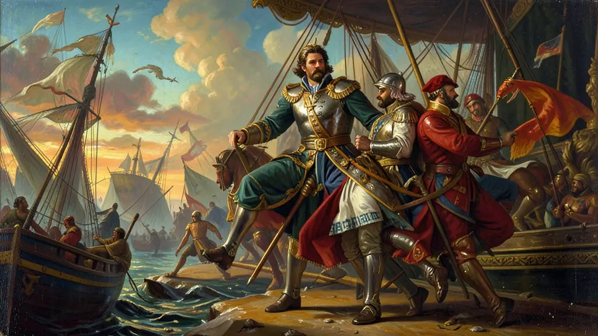
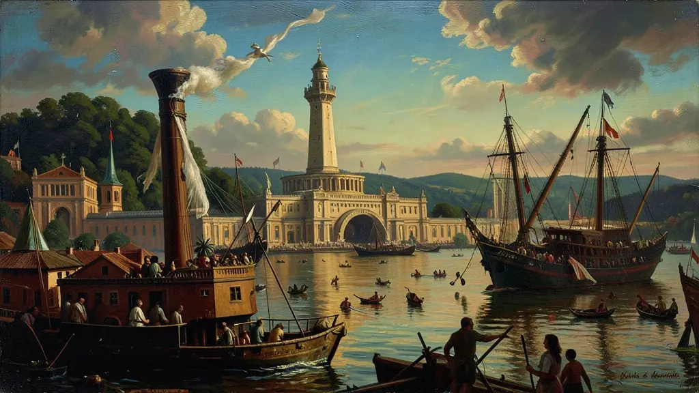
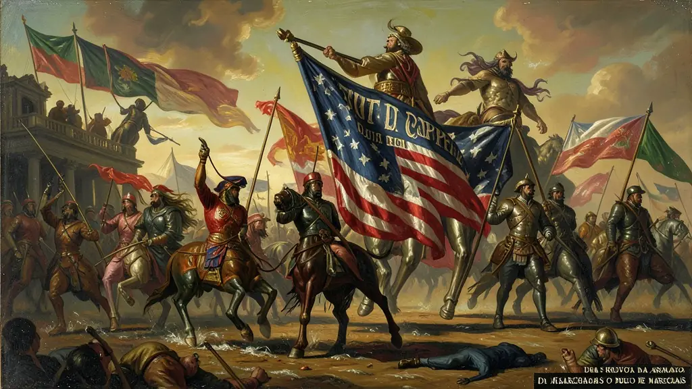

Capítulo 01
1. O Marechal de Ferro contra a Armada
Floriano Peixoto não era de conversa. Ele assumiu a presidência após o golpe de Deodoro e recusou-se a convocar novas eleições, como mandava a lei. Quando a Marinha, liderada por Custódio de Melo, ameaçou bombardear o Rio se ele não saísse, Floriano respondeu com a frase famosa: 'Se o almirante atirar, eu atiro nele'. O Rio de Janeiro virou uma zona de guerra entre a espada da terra e o canhão do mar.

Capítulo 02
2. Canhões sobre o Rio: O Terror Civil
Milhares de moradores fugiram para os morros ou para o interior de Minas. Das fortalezas de Santa Cruz e de São João, o Exército trocava tiros com os couraçados 'Aquidabã' e 'Riachuelo'. Navios estrangeiros (ingleses e americanos) observavam a destruição da capital brasileira. Era a prova de que a Proclamação da República de 1889 não havia trazido a paz prometida, mas sim a ambição armada pelo poder central.

Capítulo 03
3. A 'Frota de Papel' dos EUA
Como a Marinha estava em revolta, Floriano não tinha navios. Ele usou o dinheiro do café para comprar sucata militar nos EUA e contratar mercenários estrangeiros para tripulá-los. Essa 'Frota de Papel' chegou ao Rio e, mesmo sendo inferior aos navios da Armada, serviu para quebrar o bloqueio naval. Os americanos ajudaram Floriano para garantir que o comércio de café com os EUA não parasse.

Capítulo 04
4. A Rendição e as Execuções
Sem apoio popular e com falta de carvão, os rebeldes da Armada renderam-se ou fugiram para o Sul em 1894. Floriano Peixoto foi impiedoso: muitos oficiais que se entregaram foram fuzilados sombriamente. A morte dos opositores serviu para mostrar que o Exército não aceitaria mais nenhum desaforo marítimo. O almirante Custódio de Melo, derrotado, foi para o exílio em Paris, mas a Marinha levaria décadas para recuperar seu prestígio.
Capítulo 05
5. O Legado: O Exército como Guardião
A derrota da Armada inaugurou o domínio de 100 anos do Exército Brasileiro como 'Poder Moderador' de fato da República. Dali em diante, a Marinha passou a ser uma arma secundária na política nacional. No entanto, o custo foi alto: o autoritarismo de Floriano serviu de inspiração para os futuros golpes militares do século XX, alimentando a ideia de que os generais são os únicos heróis capazes de salvar o Brasil de si mesmo.
As duas Revoltas da Armada (1891 e 1893-1894) encarnaram o conflito agudo sobre a consolidação e a natureza autoritária da nascente ditadura militar florianista. A Marinha, de composição mais aristocrática e monarquista, colidiu frontalmente contra o Exército (de bases positivistas e republicanas), que controlava inconteste o governo federal.
Sob o comando dos Almirantes Custódio José de Mello e Saldanha da Gama, encouraçados brasileiros bombardearam o Rio de Janeiro com a intenção de forçar a renúncia do marechal Floriano Peixoto ('O Marechal de Ferro'). O levante estendeu-se até atrelar com os maragatos na sangrenta Revolução Federalista no Sul.
No contexto do Enem, as revoltas navais submetem o aluno à reflexão sobre as fraturas intraclasses e a turbulência formidável vivida no alvorecer republicano. Evidencia que a transição monarquia-república não teve uma consolidação apaziguadora, mas impulsionou disputas fratricidas pela hegemonia do Estado Brasileiro.
Fonte: SILVA, Hélio. A República da Espada. Rio de Janeiro: Civilização Brasileira, 1978.
Atividades interativas
Questões para fixar
A Revolta da Armada (1893-1894) no Rio de Janeiro foi motivada principalmente por qual fator político?
O governo de Floriano Peixoto (1891-1894) ficou conhecido como o 'Marechal de Ferro' por qual razão?